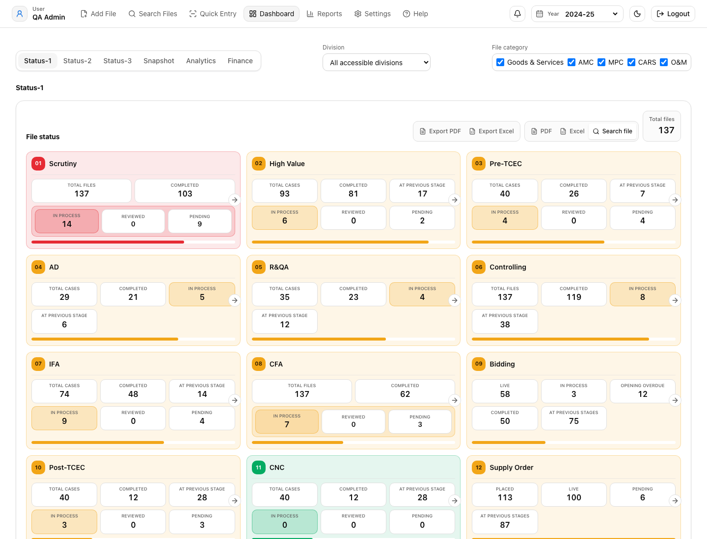
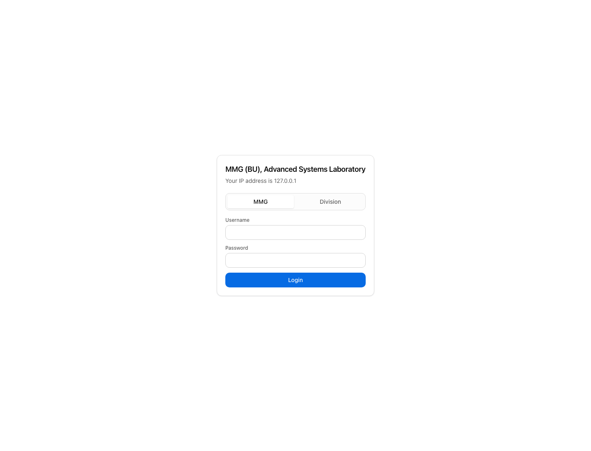
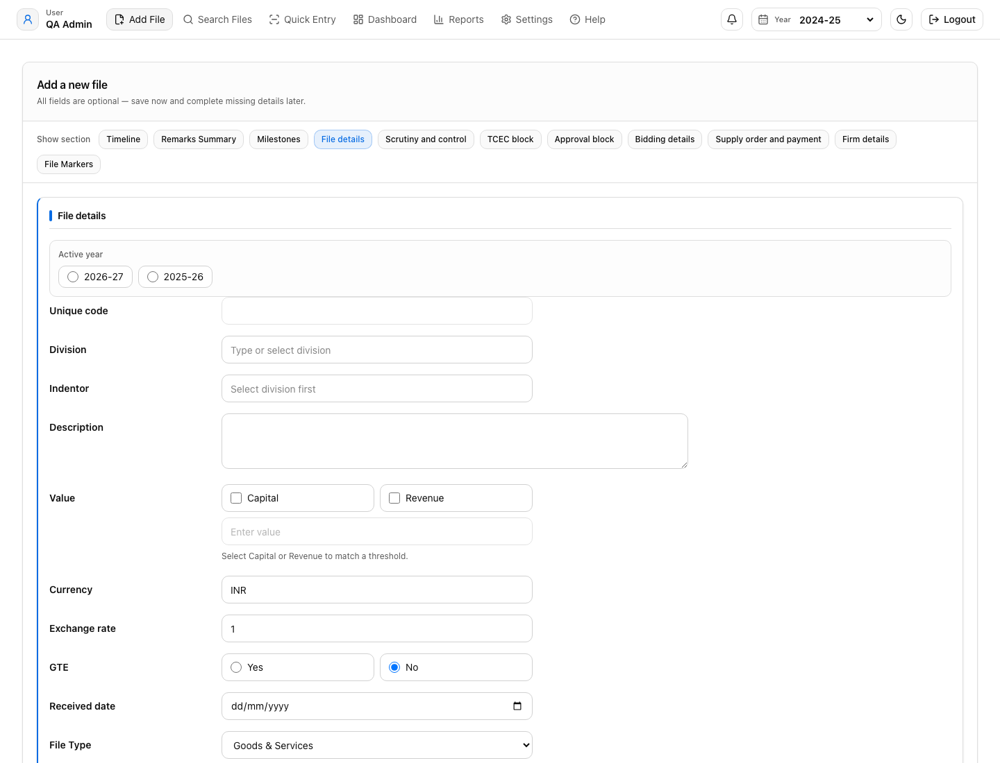
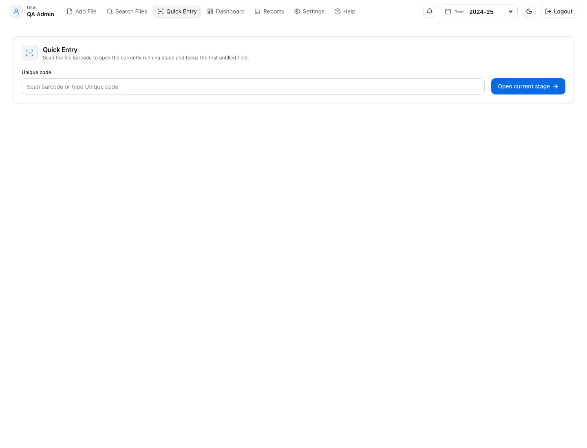
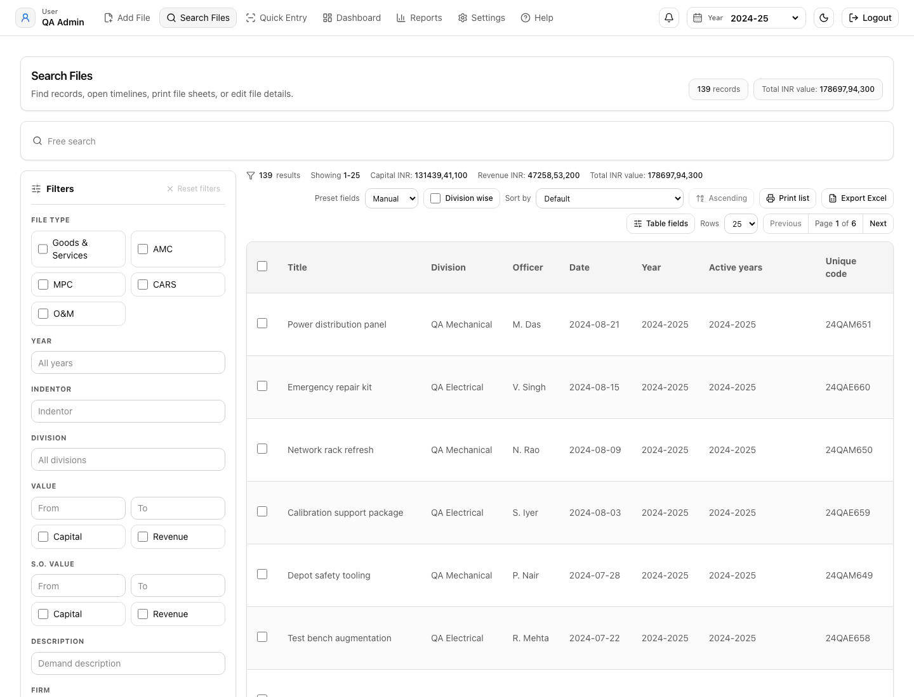
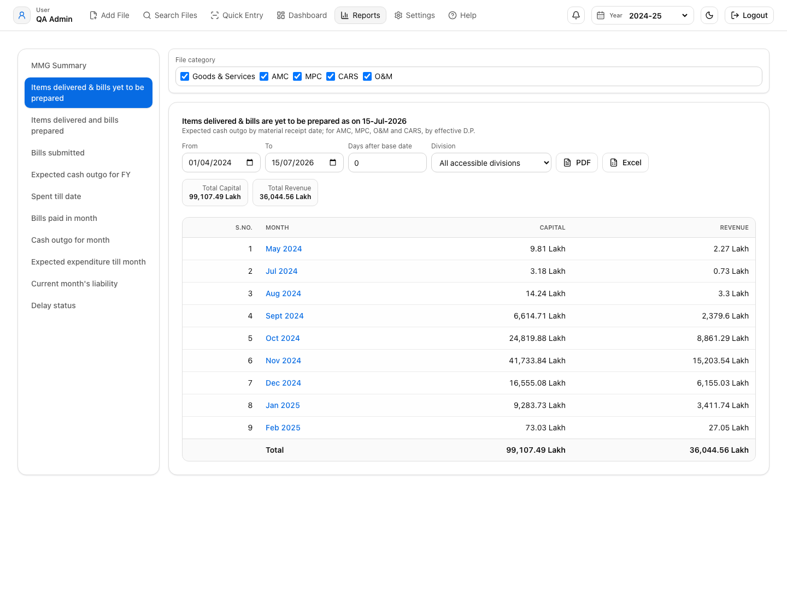
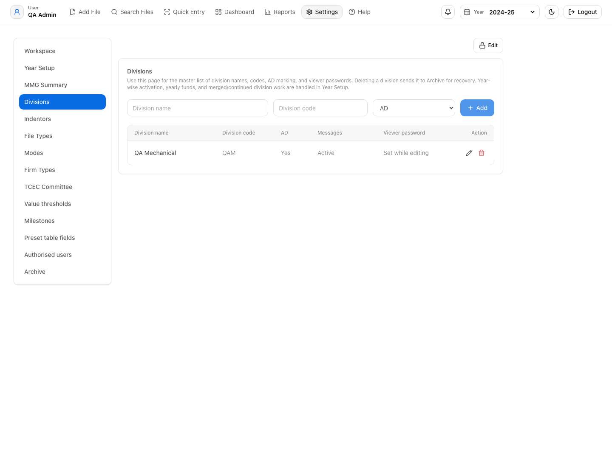

Document status: Draft user/admin manual Audience: Admins, sub-admins, editors, division users, viewers, and report users Screenshot convention: Screenshots are embedded in the Help/PDF build. Refresh screenshots after major UI changes.
File History is a records and procurement tracking application for managing procurement files, milestones, supply orders, payments, delay status, financial year-wise reporting, dashboard summaries, and MMG reporting.
The system is designed around these principles:

Access is controlled by user role, assigned divisions, and allowed file categories.
Admin users can generally:
Sub-admin users may have broad operational access but may not have every administrative permission. Their actual visibility depends on assigned divisions and file category permissions.
Editor users can enter and update file records as permitted by their role and access scope.
Division-scoped users see only assigned division data. If file category access is configured, they see only allowed categories on dashboard, reports, and search.

Users log in with username and password.
If the software does not log in:
The navigation usually includes:
The Home page is the entry point after login. Depending on routing, it may redirect to Search or Dashboard.
The Home page gives quick access to the main workflows:
The Home page uses current user role, selected financial year, and access restrictions to determine what the user can see.
The Add File page is used to create a new file or edit an existing file.

Typical fields include:
The Add File page does not allow free typing of the file year. It calculates the working year from the selected system year:
All active files, the current workspace financial year is used.Only two active-year options are shown in Add File. The software takes the current effective financial year, adds the configured financial years from Settings, sorts them latest-first, removes duplicates, and keeps only the latest two. This is why, at one time, only two years are visible for selection. The purpose is to allow the current year and one carry-forward/recent year without letting users keep a file active across many accidental years.
If year selection is locked in Settings, the Add File page allows only the fallback/effective year. If year selection is unlocked, the user can choose from the latest two options only. If an older file has active years outside the latest two, the page normalizes the selection back to an allowed year when loaded.
The file becomes visible in Search/Dashboard/Reports for a year when:
year matches that year, oractiveYears includes that year.For All active files, the file is visible only if it is still active. A file is treated as inactive when payment is completed or it is cancelled as per the cancellation logic.
When adding a new file, fields are editable according to the user's role and enabled options.
When editing an existing file, important blocks are locked by default. The user must unlock the relevant block before changing filled values. Common locked blocks include:
The lock is not only visual. The code checks the locked state before allowing changes. If the user is in read-only mode, all edit handlers return without saving changes. Demand cancellation has an additional protection: it requires deletion-password confirmation before it can be unlocked.
File Markers are file-specific keywords or short notes used to make a file easier to find later.
They are useful when the normal file fields may not contain the word by which users commonly remember the case. Example markers:
File Markers do not change file status, milestones, delay status, dashboard counters, finance values, or reports. Their main purpose is searchability.
Actual behavior:
Example:
If a file has marker text vendor complaint, searching complaint in Search File can bring that file even if complaint is not written in the title, demand description, firm name, or S.O. fields.
Precautions:
File category is derived from file type. Common categories include:
Mode is selected from configured mode values such as OBM, PBM, SBM, LBM, LPC, or locally configured values.
Milestone dates must be entered in sequence as far as possible.
Common milestone fields include:
The Milestones block shows only applicable milestones. Applicability is calculated from the file flags:
Yes.Yes.Yes and the selected division is not configured as AD-not-required.Yes.Yes.Yes.Yes.The Current checkbox for a milestone is disabled when:
File Closed,The Completed checkbox for a milestone is disabled when:
This is why main file-level milestone checkboxes may appear locked. For S.O.-driven milestones, the main file checkbox is not the source of truth. The software reads progress from the Supply Order/stage rows and shows progress like 2/3 stages done or 1/2 supply orders done.
When a user manually marks a milestone as completed, and that same milestone was selected as current, the software clears the current milestone. This prevents a milestone from being both current and completed at file level.
Some milestones are completed automatically when their actual completion field is present. The manual checkbox and the date field must remain consistent. The software checks for both types of mismatch:
For staged or multiple S.O. milestones, the software also checks whether all applicable rows are complete. If only some stages or S.O.s are complete, the main file milestone is treated as partially complete, not fully complete.
A file may have zero, one, or many Supply Orders.
Each Supply Order may include:
S.O.-level milestone controls are used when there is more than one Supply Order or when any Supply Order contains meaningful S.O./stage data. A row is considered meaningful when real values exist; a plain No in flags such as stage delivery, stage payment, DP extension, LD, advance payment, demand cancelled, or S.O. cancelled is not enough by itself.
Each Supply Order can have its own current milestone and completed milestones. The applicable S.O. milestone list respects file-level settings:
No.No.For S.O.-level validation:
If staged delivery/payment is enabled for an S.O.:
Stage delivery autofill rules:
Yes for a D.P./stage, LD detail fields appear. Select either Full or Partial and enter the LD percentage value in the percentage field.Delivery current checkbox behavior:
Demand cancellation should be used only before any S.O. is placed.
If an S.O. is already placed:
Quick Entry is for rapid updates to existing files using unique code.

Quick Entry reduces time for updating the current milestone and related date fields without opening the full Add File form.
The user enters or selects a unique code. The system identifies the file and determines the current milestone or S.O.-level stage that can be updated.
Quick Entry may update:
Quick Entry first searches by Unique code within the user's accessible files. If no file is found, no update is allowed. If more than one accessible file has the same Unique code, Quick Entry stops and asks the user to correct duplicate codes before using the shortcut.
After the file is identified, Quick Entry checks the file's current milestone and maps it to the matching editable section. If the current milestone cannot be linked to a Quick Entry stage, the user must open Add File and correct the current status under Milestones.
Quick Entry then opens the relevant Add File route with focus parameters. The full Add File validation still applies. Therefore Quick Entry is a shortcut to the correct field, not a bypass of file validation, access control, S.O.-level logic, or stage-level logic.
When the target is S.O./stage-based, the update must be made against the relevant S.O. row or stage row. If multiple S.O.s or stages exist, the user must verify the row before saving because one file can contain several pending S.O./stage statuses at the same time.
The Search File page is the main file retrieval and review screen.

Search allows users to:
Rows per page options:
Default rows per page:
Previous/Next controls are available at the bottom of the list.
Search keeps 25 as the default page size. The user can change it only to the available page-size options: 10, 25, or 50. Pagination is server-backed: the current filter set, page number, and page size are sent to the API, and the returned total is used to calculate total pages.
Previous/Next navigation changes only the page number. It does not change filters. When the user changes filters, the page is reset so the first matching records are shown.
Search always respects:
All active files,Common filters include:
The main free-text search includes File Marker text. This means a marker can be used as an internal tag for finding a file quickly.
File Marker search follows the same access and filter rules as normal search:
Search can receive filters from Dashboard and Reports. Examples:
Dashboard and Reports pass a dashboardFilter value to Search. Search reads that filter and applies the matching server/API query.
The same Search page also decides where the Edit/Open action should focus inside Add File. For example:
This is why clicking a Dashboard/Report number can open Search first, and then opening a file can take the user directly to the relevant Add File section.
Users can select which columns appear in Search results.
Table fields include file-level fields, S.O.-level fields, staged delivery/payment fields, and special computed fields.
Table Fields decide which fields are shown in the Search table and exports. The field list includes normal file fields, raw procurement flags, S.O. fields, stage delivery/payment fields, computed milestone fields, and finance fields such as currency, exchange rate, GTE, AD, PSB, IR, RFP vetting, current milestone, delivery-period fields, advance payment fields, staged amount fields, TCEC/RFP/refloat fields, and other configured report fields.
If a field is not selected, the data may still exist in the file but will not appear in that table view/export.
Search results can be exported to Excel or PDF. Export respects selected table fields where applicable.
Dashboard gives a summary of file status, live milestones, Status-3, analytics, and finance. For the actual clicker and counter rules, see Dashboard and Reports Counter/Clicker Logic.
Common tabs include:
Snapshot shows high-level totals and classifications such as:
Snapshot counters are usually file-based. Clicking should normally open the matching file list.
Dashboard clickers route into Search with an encoded filter. The visible number may be based on one of four counting methods:
The clicked Search result normally lists unique files. Therefore the Search file count may be lower than the Dashboard number when the Dashboard number counted multiple S.O.s/stages/payments under the same file.
Dashboard also respects file category access. If a user is allowed only specific file categories, only those allowed categories should appear as selectable category options, and counters should be calculated only from the accessible set.
Status shows milestone flow and progress.
It may include:
Detailed Status counter rules are explained in Dashboard Status Counters.
Live Status shows files grouped by current milestone.
Logic:
Actual Status-2 behavior:
Status-3 gives detailed status summary across milestone groups.
Important rule:
Example:
See Status Summary and Status-3 Counters for detailed logic.
Analytics panels include:
Finance tab shows:
Reports provide detailed tables for delays, cash outgo, MMG summary, and status summaries. For detailed counter/clicker interpretation, see Dashboard and Reports Counter/Clicker Logic.

Delay Status identifies files or S.O.-level items stuck beyond a configured number of days.
Logic:
Delay Status is row-based. It can include:
The delay start date depends on the current milestone. For example, a file-level delay uses the matching file milestone start/review date, while an S.O./stage delay uses the relevant S.O. or stage date. The delay threshold entered on the Reports page is compared with the calculated days pending.
Clicking a delay row sends a filter to Search. If several delayed rows belong to the same file, the delay table can show more rows than the clicked unique-file result.
Precautions:
Expected Cash Outgo estimates upcoming financial liability.
Modes can include:
Logic:
Precautions:
MMG Summary shows selected fields configured in Settings.
It may include:
MMG Summary uses the configured MMG Summary field list from Settings. It combines raw file fields, S.O./stage fields, finance fields, milestone/current status fields, and calculated values. If an expected column is missing from MMG Summary, first check whether that field is selected in Settings.
MMG Summary uses the same year, division, file category, and access-control filtering as the rest of Reports. It is not a separate unrestricted export.
Status Summary groups milestones and counts progress.
Important interpretation:
Settings control system-wide configuration and user access.

Admin settings may include:
Controls:
The selected financial year is the default context for Dashboard, Reports, Search, and Add File. If the selected context is All active files, Add File still needs one concrete financial year for new-file defaults, so it uses the workspace financial year internally.
The year lock controls whether Add File can keep or change active-year selection. When locked, Add File normalizes active years back to the effective/fallback year.
Precautions:
Rules:
2026-27.Financial years must follow YYYY-YY, for example 2026-27. The last two digits must match the next calendar year. Therefore 2026-27 is valid and 2027-27 is invalid.
Duplicate years are rejected. The configured year list must remain continuous. Continuity works in both directions: an admin may add a previous year or a future year, but the new year must touch the existing sequence without a gap.
Division settings include:
Precautions:
Indentors are linked to divisions and used in files/reports.
File types define file categories and report filtering.
Common categories:
Modes are procurement mode options used in Add File, Search, Dashboard, and Reports.
Firm types appear in Supply Order firm classification and finance distribution.
TCEC committee settings define committee values available for pre/post TCEC records.
Value thresholds are used for analytics and classification.
Milestones define manual milestone flow and live status tracking.
Precautions:
File Closed logic clear.Controls default Search table columns.
Controls which fields appear in MMG Summary.
Controls:
Editors, admins, and sub-admins remain users across financial years. Creating a new financial year does not create new users and does not remove existing users. Their roles, divisions, and file category access remain as configured unless changed in Settings.
File category access affects both entry and reporting. A restricted user should see only allowed file category options in Add File/Search/Dashboard/Reports, and backend APIs also filter inaccessible records.
Precautions:
Archive settings allow review and restoration/deletion of archived files.
Financial years should use format:
YYYY-YY
Example:
2026-272027-28Years must remain continuous. If existing years are:
2025-262026-27Then next allowed years are:
2024-252027-28Skipping a year should not be allowed.
Previous years can be added only if continuity is maintained.
Selected year determines what Dashboard, Reports, Search, and Add File use by default.
A file can remain active in multiple years. Such files may appear in later years even if original file year is earlier.
Unique code is generated using:
Examples:
2026-27 gives FY prefix 26.2027-28 gives FY prefix 27.If division code is QAE, an example unique code can be:
26QAE001
If division code is 123, an example unique code can be:
26123001
Typical flow:
Current milestone indicates where the file is presently pending.
Completed milestones indicate stages already completed.
The software treats these milestone completion fields as the source of truth:
| Milestone | Completed when this data exists |
|---|---|
| Scrutiny | Scrutiny completion date |
| High Value | High Value minutes date, when High Value is Yes |
| Pre-TCEC | Pre-TCEC minutes date, when TCEC is Yes |
| AD | AD vetting date, when AD is Yes and the division does not disable AD |
| R&QA | R&QA approval date, when R&QA is Yes |
| Controlling / Control no. | Control no. date |
| IFA | IFA final date, when IFA is Yes |
| CFA | CFA approval/date field |
| Bidding | Bidding stage over is Yes |
| Post-TCEC | Post-TCEC minutes date, when TCEC is Yes |
| CNC | CNC approval date, when TCEC is Yes |
| Supply Order | Applicable S.O. row progress is complete |
| Bank Guarantee | BG validity date exists for applicable S.O.s, when BG is Yes |
| Delivery | Material receipt/stage delivery dates exist for applicable S.O./stage rows |
| IR Preparation | IR preparation dates exist for applicable S.O./stage rows, when IR is Yes |
| IR Receipt | IR receipt dates exist for applicable S.O./stage rows, when IR is Yes |
| Bill preparation | Bill preparation dates exist for applicable S.O./stage rows |
| Bill sent for payment | Bill sent for payment dates exist for applicable S.O./stage rows |
| Payment | Payment dates or applicable actual payment rows exist for applicable S.O./stage rows |
For multi-row milestones, all applicable rows must be complete before the file-level milestone is treated as fully complete. If only part of the S.O./stage set is done, the page shows progress instead of unlocking a simple file-level completed checkbox.
Some milestones apply only if a flag is Yes.
Examples:
Each S.O. can carry separate:
If stage delivery is enabled:
% field.If stage payment is enabled:
One file can have:
In this case:
Archiving removes a file from normal active lists without permanently deleting it.
Restoring brings an archived file back into active records.
Permanent delete should be used only after confirmation and with required password.
Archived files should preserve the file record and related child data needed for restoration, such as:
Supported formats may include:
Search export uses selected filters and table fields.
Dashboard and report exports use the visible summary or matching files.
Table Fields should include file-level, S.O.-level, staged, payment, cancellation, and settings-driven fields.
Dates should be entered sequentially.
Recommended order:
Check:
This chapter explains the actual logic used for Dashboard and Reports counters. It should be read with Dashboard Page, Reports Page, and Search File Page.
Most counters are based on the selected financial year, selected division, and the logged-in user's allowed file categories.
Important:
Example:
Payment Pending = 25.18 files.| Rule | Logic |
|---|---|
| Financial year | Only files visible in the selected year are considered. |
| Division | If a division is selected, only that division is counted. |
| File category access | Users see and count only allowed file categories. |
| Cancelled files | Most counters exclude demand-cancelled files. Cancellation counters intentionally include cancelled cases. |
| S.O. cancelled | S.O.-row counters generally exclude cancelled S.O.s except S.O. cancelled counters. |
| Clicker result | Clicking sends a dashboard/report filter to Search File. Search normally returns files, not every internal counted row. |
Snapshot counters are mostly file counters. They count active files after year/division/category access filters.
| Counter/clicker | What it counts | Clicker logic |
|---|---|---|
| Total files | Active files visible to the user. | Opens all matching files. |
| TCEC | Files where TCEC flag is Yes. | Opens files with TCEC = Yes. |
| Non-TCEC | Files where TCEC flag is No. | Opens files with TCEC = No. |
| GTE / Non-GTE | Files by GTE flag. | Opens files matching the selected GTE flag. |
| GeM / Non-GeM | Files by GeM flag. | Opens files matching the selected GeM flag. |
| High Value / Non High Value | Files by High Value flag. | Opens files matching the selected High Value flag. |
| AD / Non AD | Files by AD flag. | Opens files matching the selected AD flag. |
| R&QA / Non R&QA | Files by R&QA flag. | Opens files matching the selected R&QA flag. |
| IFA / Non IFA | Files by IFA flag. | Opens files matching the selected IFA flag. |
| PSB / Non PSB | Files by PSB flag. | Opens files matching the selected PSB flag. |
| BG / Non BG | Files by Bank Guarantee flag. | Opens files matching the selected BG flag. |
| RFP vetting / Non RFP vetting | Files by RFP vetting flag. | Opens files matching the selected RFP vetting flag. |
| Refloat / Non Refloat | Files by Refloat flag. | Opens files matching the selected Refloat flag. |
| RST / Non RST | Files by RST flag. | Opens files matching the selected RST flag. |
| File Type | Files grouped by Goods & Services, AMC, MPC, CARS, O&M. | Opens files from that file category. Restricted users see only allowed categories. |
| Mode | Files grouped by procurement mode such as OBM, PBM, SBM, LBM, LPC, or configured modes. | Opens files with that mode. |
| Firm Type | Files having at least one S.O. with that firm type. | Opens files where any S.O. firm type matches. One file may have multiple S.O.s but opens once in Search. |
Status counters use the configured milestone sequence. The main configured file milestones include Scrutiny, High Value, Pre-TCEC, AD, R&QA, Controlling, IFA, CFA, Bidding, Post-TCEC, CNC, Supply Order, Bank Guarantee, and Payment.
| Counter/clicker | What it counts | Actual logic |
|---|---|---|
| Total files / Total cases | Files where the milestone applies. | For normal milestones, counts active applicable files. For High Value, AD, R&QA, IFA, Pre-TCEC, Post-TCEC, CNC, applicability depends on the respective Yes flag. |
| At previous stage | Files where the milestone applies but the previous applicable milestone is not complete yet. | Uses the milestone sequence and previous completed date. |
| In process | Files whose main current milestone is that milestone. | Uses file-level current milestone. For Bidding, live/overdue bids are separated. |
| Reviewed | Files currently at that milestone where the reviewed/sent/meeting date exists but completion date is missing. | Used only for milestones having reviewed fields, such as Scrutiny, High Value, Pre-TCEC, IFA, CFA, Post-TCEC, CNC. |
| Pending | Files currently at that milestone and not complete. | For reviewed milestones, pending means current milestone is active and reviewed date is not filled. |
| Completed / Cleared | Files where completion date exists. | Uses the milestone completion date or the special S.O./payment completion logic. |
| Milestone | Applies when | Reviewed/start field | Completion field |
|---|---|---|---|
| Scrutiny | All active files. | Scrutiny date. | Scrutiny completion date. |
| High Value | High Value = Yes. | High Value meeting date. | High Value minutes date. |
| Pre-TCEC | TCEC = Yes. | Pre-TCEC date. | Pre-TCEC minutes date. |
| AD | AD = Yes. | Previous applicable stage. | AD vetting date. |
| R&QA | R&QA = Yes. | Previous applicable stage. | R&QA approval date. |
| Controlling | All active files. | Previous applicable stage. | Control no. date. |
| IFA | IFA = Yes. | IFA sent date. | IFA final date. |
| CFA | All active files. | CFA sent date. | CFA date. |
| Bidding | All active files. | Previous applicable stage. | Bidding stage over. |
| Post-TCEC | TCEC = Yes. | Post-TCEC date. | Post-TCEC minutes date. |
| CNC | TCEC = Yes. | CNC date. | CNC approval date. |
| Counter/clicker | Logic |
|---|---|
| Live | Tender live flag is Yes. |
| Opening overdue | Bid opening is overdue as per bid date/opening date logic. |
| In process | Current milestone is Bidding, but it is not live and not opening overdue. |
| Completed | Bidding stage over date/value is filled. |
| At previous stages | Bidding applies but previous applicable milestone is not complete. |
Supply Order is S.O.-driven. If a file has multiple S.O.s, counters may count multiple S.O. rows.
| Counter/clicker | What it counts | Logic |
|---|---|---|
| Total files / Total | Effective expected S.O. rows. | Counts expected S.O.s from file/S.O. data. Multiple S.O.s under one file can increase the count. |
| Placed / Completed | S.O. rows having S.O. date and not cancelled. | Uses S.O. date from S.O. row or legacy file-level S.O. date. |
| Live | S.O. rows where S.O. date exists, payment date is not filled, and S.O. is not cancelled. | Counts live S.O. rows. |
| Pending | S.O. rows whose current milestone is Supply Order and not cancelled. | Uses S.O.-level current milestone when multiple S.O.s exist. |
| At previous stage | Files where Supply Order applies but previous stage is not complete. | File-based. |
Bank Guarantee applies independently when BG = Yes. It does not wait for S.O. placement to become pending. This is intentional because BG may be required before or parallel to S.O. placement, delivery, or payment preparation.
| Counter/clicker | What it counts | Logic |
|---|---|---|
| Total files / Total | BG-applicable expected S.O. rows. | Counts active non-cancelled expected S.O. rows where BG = Yes. |
| Received | BG-applicable rows where BG is received/completed. | BG is received when BG validity/received date exists or the BG Done checkbox is selected. |
| Pending | BG-applicable S.O. rows where BG is required but not received. | BG = Yes, BG not received/completed, row not cancelled. S.O. date is not required. |
| Expired | BG rows where the BG validity date itself has expired before payment. | BG = Yes, BG received/completed, BG validity date filled and before today, BG return date blank, S.O. not cancelled, and payment date blank. Delivery Period/Revised D.P. is not checked for this counter. |
| To be returned | BG rows where BG return is pending after payment or S.O. cancellation. | Counts BG received/completed rows with BG return date blank when either S.O. is cancelled, or payment date is filled and BG validity date has expired. |
| At previous stage | Historical/sequence view only. | BG is now treated as an independent parallel status, so pending/received counters are the primary BG status indicators. |
If BG validity date is filled and BG Done is also checked, the row is still counted once as BG Received. It is not counted as Pending. If only BG Done is checked but BG validity date is blank, the row is counted as Received/Completed; however, normal BG Return still needs the BG validity/expiry date unless the S.O. is cancelled.
| Counter/clicker | What it counts | Logic |
|---|---|---|
| Valid | S.O./stage rows where delivery period is currently valid. | Uses DP date or revised DP if present and checks that today is within the delivery period. For Goods & Services, received rows are excluded through Material Receipt. For AMC, MPC, O&M, and CARS, Material Receipt is not applicable, so period validity is the governing logic. Cancelled rows are excluded. |
| Expired | S.O./stage rows where delivery period has expired. | Uses DP/Revised D.P. date and excludes cancelled S.O.s. For Goods & Services, Material Receipt completion removes the row from pending/expired delivery logic. For AMC, MPC, O&M, and CARS, Material Receipt is not applicable. |
| Extended | S.O./stage rows where revised DP exists. | Counts revised-DP rows where the delivery period remains active as applicable. |
Delivery and IR counters are used where delivery/inspection is applicable.
| Counter/clicker | What it counts | Logic |
|---|---|---|
| Delivery Completed | Goods & Services S.O./stage rows where Material Receipt date exists. | Excludes cancelled S.O.s. Material Receipt is not applicable for AMC, MPC, O&M, and CARS. |
| Delivery Pending | Current delivery-period S.O./stage rows where delivery is still pending. | Counts only the active/current delivery stage. For Goods & Services, Material Receipt must be blank. For AMC, MPC, O&M, and CARS, Material Receipt is ignored and period validity controls the current stage. Future stages are not counted merely because they exist. |
| Delivery Overdue | S.O./stage rows where DP/revised DP has passed. | For Goods & Services, Material Receipt must be blank. For AMC, MPC, O&M, and CARS, Material Receipt is ignored. Cancelled S.O.s are excluded. |
| IR Preparation Pending | Rows where material receipt exists, IR = Yes, and IR preparation date is missing. | Excludes cancelled S.O.s. |
| IR Receipt Pending | Rows where IR preparation date exists and IR receipt date is missing. | Excludes cancelled S.O.s. |
| IR Completed | Rows where IR receipt date exists. | Excludes cancelled S.O.s. |
Payment can be file-level, S.O.-level, stage-level, or advance-payment related.
| Counter/clicker | What it counts | Logic |
|---|---|---|
| Total | Payment pending rows plus payment completed rows. | A single file can contribute multiple payment rows. |
| Pending | Payment rows where payment is due but payment date is missing. | Uses material receipt, bill preparation, bill sent, staged payment, and advance payment data as applicable. |
| Completed | Payment rows where payment date exists. | Uses S.O./stage payment date and excludes cancelled S.O.s. |
| In process | Files whose main current milestone is Payment. | File-based current status. |
| At previous stage | Files where payment applies but earlier applicable stage is not complete. | File-based previous-stage logic. |
Status-2 shows current milestone counts by division.
| Counter/clicker | Logic |
|---|---|
| Division total | Sum of visible current milestone counts for that division. |
| Normal milestone cell | Files in that division whose file-level current milestone equals that milestone. |
| S.O.-driven milestone cell | S.O./stage rows in that division whose S.O.-level or stage-level current milestone equals that milestone. |
| Completed clicker, where shown | Uses completed milestone list at file level or S.O./stage completed milestones for S.O.-driven milestones. |
Status Summary/Status-3 uses the same broad milestone rules as Dashboard Status, but displays them as grouped rows.
| Row type | Counter logic |
|---|---|
| Common milestone rows | Total, In process, Pending, Completed are based on applicable active files. |
| Reviewed rows | Count active current files where reviewed/sent/meeting date exists but completion date is missing. |
| Bidding rows | Live and Opening overdue use tender live and bid overdue logic. |
| Supply Order rows | Placed, Live, Pending, and Total can count S.O. rows. |
| Bank Guarantee rows | Received, Pending, Expired, To be returned, and Total can count S.O. rows. |
| Delivery Period rows | Valid, Expired, Extended can count S.O./stage rows. |
| Delivery rows | Completed, Pending, Overdue can count S.O./stage rows. |
| Payment rows | Pending, Completed, Total can count payment rows. |
| Counter/clicker | Logic |
|---|---|
| Live files | Active files not marked File Closed. |
| File closed | Active files where File Closed milestone/status is present. |
| LD | S.O. rows where LD flag is Yes. |
| Demand cancelled | Files where demand cancelled flag is Yes. This cancellation counter intentionally includes cancelled files. |
| S.O. cancelled | Files/S.O.s where S.O. cancelled flag is Yes. This cancellation counter intentionally includes cancelled S.O.s. |
| Multiple S.O. | Active files with more than one expected S.O. row. |
Analytics is usually for ranking and summary, not always direct file counts.
| Analytics panel | Logic |
|---|---|
| Division file ranking | Counts active files by division. |
| Top indentors by files | Counts active files by indentor. |
| Top indentors by value | Sums demand value by indentor. |
| Bidding mode mix | Counts active files by mode. |
| Monthly file inflow | Counts files by received date or file date month. |
| Division turnaround ranking | Average days from received date to first S.O. date. |
| Milestone clearing ranking | Average days between milestone start and completion dates. |
| Top firms by S.O. value | Sums S.O./stage values by firm; one file can contribute multiple S.O./stage values. |
| Value thresholds | Groups files/values according to configured value threshold levels. |
| Risk ranking | Counts rows with cancellation, LD, overdue delivery, or similar risk conditions. |
| Payment pending ranking | Counts payment-pending rows by division. |
Finance shows amounts, not file counts.
| Finance value | Logic |
|---|---|
| Allocated capital/revenue | Sum of division allocation values from Settings. |
| Booked capital/revenue | Demand value for active files where Control no. is filled and no committed S.O. value exists. |
| Projected capital/revenue | Demand value for active files where Control no. is not filled. |
| Committed/spent capital/revenue | S.O. value from active non-cancelled S.O.s, including stage values where stage delivery is used. |
| Paid capital/revenue | Actual payment values from active non-cancelled S.O./stage/payment rows. |
| Percent booked/projected/spent | Corresponding value divided by allocated amount. |
| Firm type distribution by S.O. value | Sums S.O. values by firm type. |
| Firm type distribution by payment | Sums actual payments by firm type. |
Delay Status checks the currently active milestone and the number of days spent there.
| Delay row type | Logic |
|---|---|
| File-level delay row | File current milestone matches the selected milestone, milestone is not complete, and days since stage start are greater than threshold. |
| S.O.-level delay row | S.O./stage current milestone matches an S.O.-driven milestone, completion date is missing, S.O. is not cancelled, and days since relevant start date are greater than threshold. |
| Delay summary | Counts delay rows, not necessarily unique files. |
| Click/open file | Opens the related file in Search/File view. A file can appear in delay more than once if multiple S.O.s are delayed. |
Delay stage start examples:
| Milestone | Stage start date |
|---|---|
| Supply Order | Previous applicable file milestone date, usually CFA date or earlier stage. |
| Bank Guarantee | S.O. date. |
| Delivery | DP date or revised DP. |
| IR Preparation | Material receipt date. |
| IR Receipt | IR preparation date. |
| Bill preparation | IR receipt date or material receipt date. |
| Bill sent for payment | Bill preparation date. |
| Payment | Bill sent for payment date. |
Cash outgo reports group amounts by month.
| Report row/clicker | Logic |
|---|---|
| Expected DP | Uses DP/revised DP date plus offset days when delivery/bill/payment is still pending. |
| Expected receipt | Uses material receipt date plus offset days when payment is still pending. |
| Receipt pending bill | Uses material receipt date for inspection files, or DP + 1 day for non-inspection files, where bill preparation/payment are still pending. |
| Bill preparation | Uses bill preparation date where bill has been prepared but bill sent/payment is pending. |
| Bill sent for payment | Uses bill sent for payment date where payment is still pending. |
| Actual cash outgo | Uses payment date and actual payment capital/revenue values. |
| Month total | Sum of capital + revenue for all matching rows in that month. |
| Clicked file list | Search shows unique files matching the row/filter. The money total may come from multiple S.O./stage rows under those files. |
MMG Summary uses the selected MMG fields from Settings.
| MMG field type | Logic |
|---|---|
| File totals | Counts active files matching the selected year/division/category filters. |
| TCEC / Non-TCEC | Counts files by TCEC flag. |
| Value fields | Uses demand/S.O./payment values depending on selected field. |
| Milestone fields | Uses current/completed milestone and date logic from the normal milestone rules. |
| Delay fields | Uses delay status logic. |
| Payment fields | Uses payment pending/completed and cash outgo logic. |
| Advance payment fields | Uses advance payment detail under S.O./stage payment data. |
This is expected in these cases:
Check:
Check:
localhost vs 127.0.0.1 mismatch.Check:
Check:
Check:
This can be correct.
Check whether the counter represents:
If it counts S.O./stage/payment rows, clicked file count may be lower.